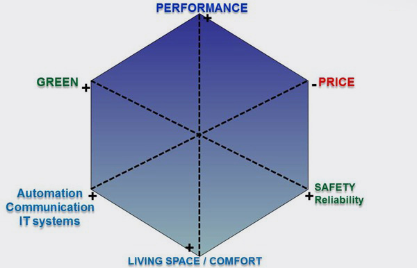
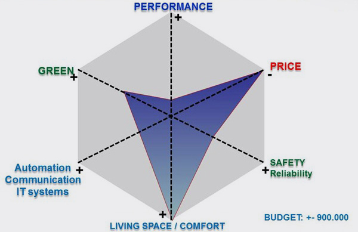
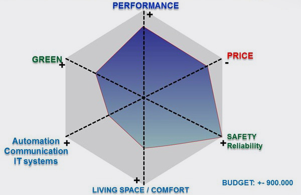
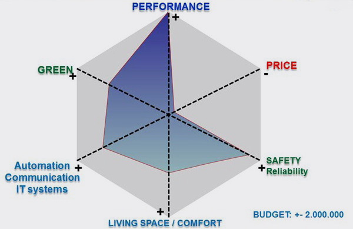
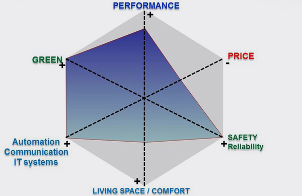

Comparison of catamarans.
Comparison of catamarans.
We like all boats mentioned on this page but want to demonstrate how boats can have a different mission and target market.
If you don’t agree with the comparison please send us your remarks to info@greenboats.com
The 100% perfect boat does not exist.


- Nice charter boats if you are looking for a very comfortable & spacy catamaran.
- A great flybridge with lots of space.
- Price/quality/value relationship is very good.
The boat is not optimized for performance, because of size & weight of boat.
Lagoon is the market leader for charter boats.
Private faster travel catamaran (go around the world)

- The quality & finishing is very good.
- The boat has as main requirements: safety, quality & performance.
- The price/quality/value relationship is very good.
- Less space when compared to e.g. a Lagoon 560. No flybridge.
- This is probably the most cost effective high performance catamaran optimized for sailing.
Fast super light sport catamaran

- Super high performance boat. All carbon & special materials.
- If you are looking for the fastest boat this could be it.
- Quite expensive though.
GreenBoat: greenest, fast, ultra comfortable family boat

- A new kind of boat with different accents, made for the people who want comfort, safety & performance at reasonable price.
- The GreenCat is based on the Nautitech 54.
- But Greenboats is more performant because of sails & lighter rotating mast used.
- This is probably the greenest boat available in the market.